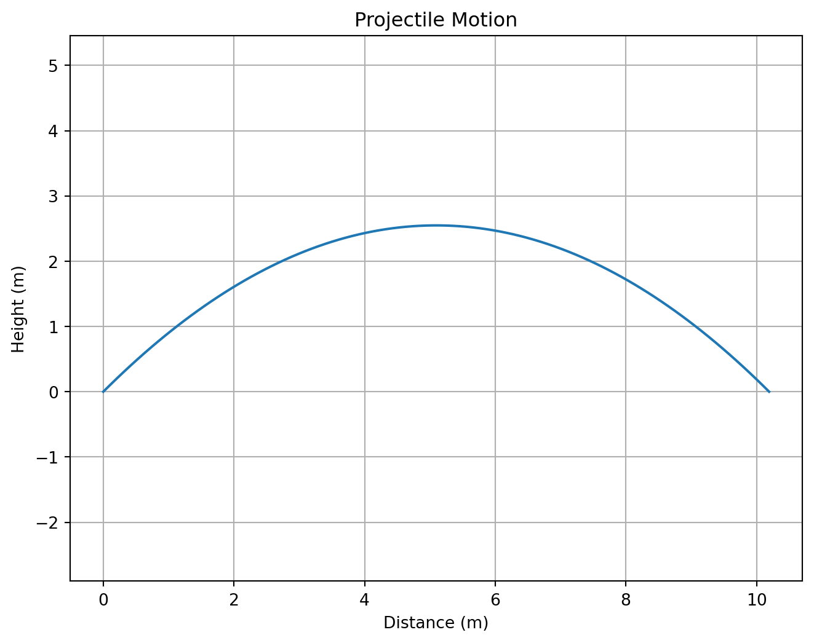

Let’s calculate the position of a projectile under gravity:
# Initial conditionsv0 =10# initial velocity (m/s)theta =45# angle (degrees)g =9.81# gravitational acceleration (m/s²)# Convert angle to radianstheta_rad = np.deg2rad(theta)# Time arrayt = np.linspace(0, 2*v0*np.sin(theta_rad)/g, 100)# Position calculationsx = v0 * np.cos(theta_rad) * ty = v0 * np.sin(theta_rad) * t -0.5* g * t**2# Plot trajectoryimport matplotlib.pyplot as pltplt.figure(figsize=(8, 6))plt.plot(x, y)plt.grid(True)plt.xlabel('Distance (m)')plt.ylabel('Height (m)')plt.title('Projectile Motion')plt.axis('equal')plt.show()

Best Practices
Code Organization
Use meaningful variable names
Add comments to explain complex logic
Break down complex problems into smaller functions
Use consistent indentation
Example of Well-Organized Code
Here’s an example calculating the period of a simple pendulum:
def calculate_pendulum_period(length, gravity=9.81):""" Calculate the period of a simple pendulum. Parameters: length (float): Length of pendulum in meters gravity (float): Gravitational acceleration in m/s² Returns: float: Period in seconds """import numpy as np# Calculate period using T = 2π√(L/g) period =2* np.pi * np.sqrt(length/gravity)return period# Example usageL =1.0# 1 meter pendulumT = calculate_pendulum_period(L)print(f"A {L}m pendulum has a period of {T:.2f} seconds")
A 1.0m pendulum has a period of 2.01 seconds
Object-Oriented Programming in Python
Classes and Objects
Classes are blueprints for creating objects that combine data (attributes) and functions (methods). This is particularly useful for modeling physical systems.
Basic Class Structure
class Particle:"""A simple class representing a particle in 2D space."""def__init__(self, x, y, mass=1.0):"""Initialize particle with position and mass."""self.x = xself.y = yself.mass = massself.vx =0# initial velocity componentsself.vy =0def set_velocity(self, vx, vy):"""Set particle velocity."""self.vx = vxself.vy = vydef kinetic_energy(self):"""Calculate kinetic energy of particle."""return0.5*self.mass * (self.vx**2+self.vy**2)def__str__(self):"""String representation of particle."""returnf"Particle at ({self.x}, {self.y}) with mass {self.mass}"# Create and use a particle objectp1 = Particle(0, 0, mass=2.0)p1.set_velocity(3, 4)print(p1)print(f"Kinetic energy: {p1.kinetic_energy()} J")
Particle at (0, 0) with mass 2.0
Kinetic energy: 25.0 J
A Physics Example: Harmonic Oscillator
Here’s a more complete example modeling a harmonic oscillator:
class HarmonicOscillator:"""Class representing a simple harmonic oscillator."""def__init__(self, mass, spring_constant):""" Initialize oscillator. Parameters: mass (float): Mass in kg spring_constant (float): Spring constant in N/m """self.m = massself.k = spring_constantself.x =0# positionself.v =0# velocitydef period(self):"""Calculate the period of oscillation."""return2* np.pi * np.sqrt(self.m /self.k)def energy(self):"""Calculate total energy (kinetic + potential).""" kinetic =0.5*self.m *self.v**2 potential =0.5*self.k *self.x**2return kinetic + potentialdef update_state(self, dt):"""Update position and velocity after time dt."""# Simple Euler integration (not ideal for accurate simulation) F =-self.k *self.x # spring force a = F /self.m # accelerationself.v += a * dt # update velocityself.x +=self.v * dt # update position# Create and use an oscillatorosc = HarmonicOscillator(mass=1.0, spring_constant=10.0)print(f"Period: {osc.period():.2f} s")# Simulate motionimport numpy as npimport matplotlib.pyplot as plt# Initial conditionsosc.x =1.0# start at x = 1 mtime = np.linspace(0, 2*osc.period(), 100)positions = []# Run simulationfor t in time: positions.append(osc.x) osc.update_state(time[1] - time[0])# Plot resultsplt.figure(figsize=(8, 6))plt.plot(time, positions)plt.xlabel('Time (s)')plt.ylabel('Position (m)')plt.title('Simple Harmonic Motion')plt.grid(True)plt.show()
Period: 1.99 s
Inheritance
Classes can inherit properties and methods from other classes:
class ChargedParticle(Particle):"""A particle with electric charge, inheriting from Particle."""def__init__(self, x, y, mass=1.0, charge=1.0):"""Initialize charged particle."""super().__init__(x, y, mass) # call parent class initializerself.charge = chargedef potential_energy(self, electric_field):"""Calculate potential energy in electric field."""return-self.charge * electric_field *self.ydef__str__(self):"""Override string representation to include charge."""returnf"Charged Particle at ({self.x}, {self.y}) with q={self.charge}"# Create and use a charged particleelectron = ChargedParticle(0, 2, mass=9.1e-31, charge=-1.6e-19)print(electron)E_field =1000# V/mprint(f"Potential energy in field: {electron.potential_energy(E_field):.2e} J")
Charged Particle at (0, 2) with q=-1.6e-19
Potential energy in field: 3.20e-16 J
Key Points About Classes
Classes combine data (attributes) and functions (methods)
The __init__ method initializes new objects
self refers to the instance of the class
Methods can modify the object’s state
Inheritance allows creating specialized versions of classes
Classes help organize code and model real-world systems
Classes are particularly useful in physics for: - Modeling physical systems - Organizing simulation code - Creating reusable components - Building hierarchies of related objects
Common Pitfalls and Tips
Remember that Python is zero-indexed (lists start at 0)
Be careful with indentation - it defines code blocks
Use numpy for numerical calculations instead of lists